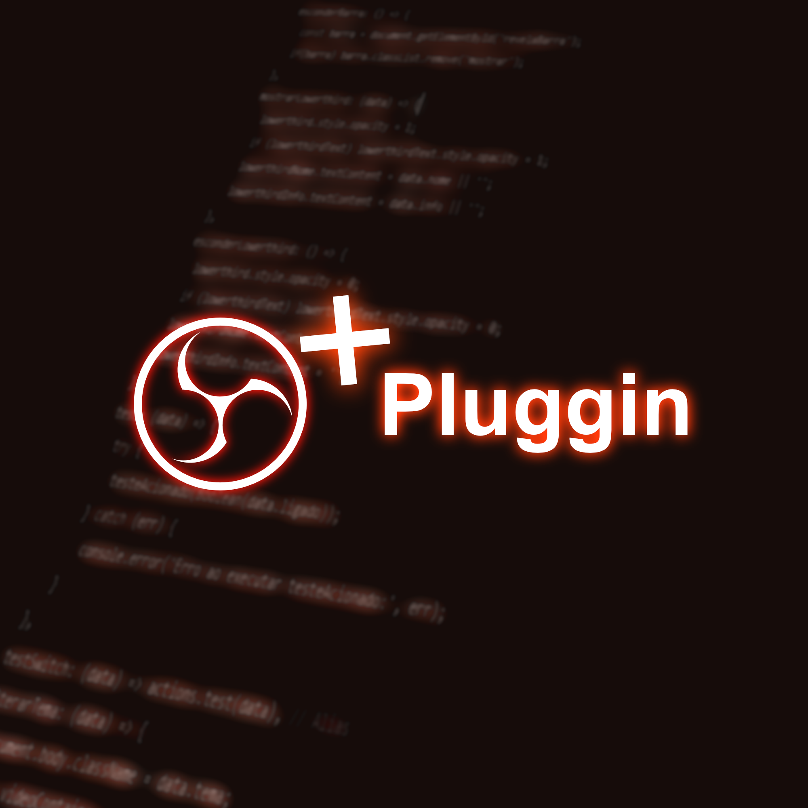

Visão Geral
Plugins Desenvolvidos
3+
Plugins funcionais entregues para uso em produção ao vivo
Redução de Trabalho Manual
~70%
Ações manuais eliminadas durante transmissões ao vivo
Ambiente
Broadcast
Produção ao vivo institucional e religiosa
Sobre o Projeto
O Desafio
As transmissões ao vivo exigem controle preciso de múltiplos elementos simultâneos — câmeras, cenas, sobreposições gráficas e áudio — em tempo real. O OBS Studio, apesar de robusto, não possuía funcionalidades específicas para o fluxo de trabalho institucional necessário.
Era necessário automatizar a troca de cenas, exibir informações dinâmicas em overlay e gerenciar elementos visuais sem interromper a transmissão, reduzindo a carga operacional do operador.
🎙️ OBS Studio
⚙️ C++
🐍 Python
🌐 WebSockets
📡 Broadcast
Funcionalidades Desenvolvidas
-
Gerenciador de Cenas Automático Alternância programada e por gatilhos entre cenas configuráveis, sem intervenção manual durante a live.
-
Overlay de Informações Dinâmicas Exibição de textos, contadores e avisos em tempo real diretamente sobre a cena ativa.
-
Monitor de Status de Transmissão Painel visual que exibe bitrate, FPS, latência e status de conexão em tempo real para o operador.
-
Controle de Áudio por Cena Configuração de perfis de áudio vinculados a cada cena, aplicados automaticamente na transição.
-
Atalhos Personalizados e Macros Conjunto de hotkeys mapeadas para ações compostas, reduzindo comandos de 5 cliques para 1.
Capturas do Projeto

Especificações Técnicas
| Componente | Tecnologia / Ferramenta | Finalidade | Status |
|---|---|---|---|
| Plugin Core | C++ / OBS Plugin API | Integração nativa com o motor do OBS | Concluído |
| Script de Automação | Python (obs-script) | Lógica de alternância e gatilhos | Concluído |
| Comunicação Remota | obs-websocket | Controle externo e integração com painéis | Em Uso |
| Interface de Configuração | HTML / CSS / JS | Painel de configuração via Browser Source | Em Evolução |
| Ambiente Alvo | OBS Studio 30+ | Compatibilidade com versão estável atual | Compatível |